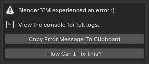

Troubleshooting¶
Bonsai is alpha software. There are many bugs! When something goes wrong, you may see some computer code flash up on your screen. You may also see an error message:
Don’t panic! Click on the button that says Copy Error Message To Clipboard. You will need to paste this text in a bug report.
If you do not have a GitHub account, you will need to sign up to report a bug. In addition to pasting the error message text, please also describe what you were doing, and attach your IFC file or screenshots if relevant.
If your issue is particularly complex, you can also chat live with developers or other powerusers.
Updating¶
We always recommend to use the latest version.
Open up Blender, click on . If an update is available, you will see a button next to the Bonsai add-on.
Updates are typically available every 2 months. If you need something more frequent, check out Unstable installation which is updated every day.

Installation issues¶
If you are unable to install Bonsai, make sure you are using Blender 4.2 installed from https://blender.org/.
Other common solutions are listed below. If none of these fix the problem, you can report a bug or live chat with a developer.
Some other error prevents me from installing or doing basic functions with the add-on. Is it specific to my environment?
Try installing and using Bonsai on a “clean environment”. A clean environment is a fresh Blender installation with no other add-ons enabled with factory settings.
To quickly test in a clean environment, first find your Blender configuration folder. Rename the folder from
X.XXto something else likeX.XX_backup, then restart Blender and try follow the installation instructions again.If this fixes your issue, consider disabling other add-ons one by one until you find a conflict as a next step to isolating the issue.
I am on Ubuntu and get an error similar to “ImportError: /lib/x86_64-linux-gnu/libm.so.6: version GLIBC_2.29 not found”
Our latest package which uses IfcOpenShell v0.8.0 is built using Ubuntu 20 LTS. If you have an older Ubuntu version, you can either upgrade to 19.10 or above, or you’ll need to compile IfcOpenShell yourself.
I get an error saying “ModuleNotFoundError: No module named ‘numpy’””
If you have installed Blender from another source instead of from Blender.org, such as from your distro’s package repositories, then you may be missing some modules like
numpy. Try installing it manually likeapt install python-numpy.I get an error saying “Bonsai installed for wrong Python version.””
If you have Python >=3.12 then installation from the Blender extensions platform is not supported and you need to download and install Python 3.12 build from Github Releases.
If you have Python 3.11, then you probably downloaded build for wrong Python version by accident. To fix it uninstall it and download Python 3.11 build from Github Releases or from Blender extensions platform.
Saving and loading blend files¶
Bonsai transforms Blender into a native IFC authoring platform. This means
that you can open and save IFC files directly without using Blender’s
.blend format.
All data about your model is saved in your IFC. No data is stored in the
.blend format. This means that if you save or open a .blend file, you
are not saving and loading your model. At best, you are saving and loading
Blender geometry that represents what the model might’ve looked at at some
point. At worst, you might be looking at a completely wrong model.
If you continue to open and save .blend files, you will run the risk of
editing something that doesn’t actually exist in your IFC model (e.g you can
meet an error similar to “RuntimeError: Instance #1234 not found”). This will
create unpredictable, and sometimes unrecoverable errors.
To avoid this issue, only open and save IFCs.
Incompatible Blender features¶
Blender offers features such as animation, sculpting, modifiers, and more that are not available in IFC. As Bonsai uses IFC as its native data store, using these incompatible features may result in data loss.
Manual geometry editing. Manually changing the mode to Edit or Object mode in the top left dropdown menu. This changes the Blender mesh editing mode, but any changes may be incompatible with the IFC geometry. This is because IFC geometry may not be a mesh, or have parametric constraints. Any changes made in this manner may have unpredictable effects and changes may be discarded. Instead, always use the Tab key to toggle object editing, or use the IFC Object / Edit mode toggle in the top right of the .
Object scaling. Bonsai does not support scaled objects in IFC. Any objects that have been scaled in object mode will have their scale reset to 1, and scaling an object may result in unpredictable operations. Instead, scale objects within edit mode.
Copy and Paste for IFC objects. Copying and pasting objects preserving their IFC data is not currently supported as pasting object may be unsafe: object may come from a different Blender session or from current session but it’s earlier state.
If you copy and paste IFC object, you will find that pasted IFC object is unlinked to any IFC data to keep it safe.
Current workarounds:
copying IFC objects in current session instead use “IFC Duplicate Object” operator (Ctrl+D).
copying IFC occurrences objects from other projects - link IFC project, query element using Explore Tool and then append it from Links UI.
copying any IFC objects to a new separate project - use IfcPatch with ExtractElements recipe.
copying IFC types from a different project use Project Library UI.
WARNING. Manually using Blender’s “Paste Objects” operator instead of “IFC Paste BIM Objects” to paste IFC objects will have unpredictable results and will lead to data corruption.
Where is the add-on installed?¶
Upon installation, Bonsai is stored in Blender configuration folder. However, the location of your Blender configuration folder depends on how you have installed Blender.
If you downloaded Blender as a .zip file without running an installer,
Bonsai will be installed in the following directory, where X.XX is the
Blender version:
/path/to/blender/X.XX/
Otherwise, if you installed Blender using an installation package, the Blender configuration folder depends on which operating system you use.
On Linux, if you are installing the add-on as a user:
~/.config/blender/X.XX/
On Linux, if you are deploying the add-on system-wide (this may also depend on your Linux distribution):
/usr/share/blender/X.XX/
On Mac, if you are installing the add-on as a user:
/Users/{YOUR_USER}/Library/Application Support/Blender/X.XX/
On Mac, if you are deploying the add-on system-wide:
/Library/Application Support/Blender/X.XX/
On Windows:
C:\Users\{YOUR_USER}\AppData\Roaming\Blender Foundation\X.XX\
Inside the Blender configuration folder, Bonsai is stored in two different
locations. The extension itself is stored in
extensions/blender_org/bonsai whereas the Python packages are installed
into extensions/.local/lib/pythonX.XX/site-packages/.
Uninstalling¶
Open up Blender, click on Edit > Preferences, and select the Get
Extensions tab. In the dropdown menu to the right of the Bonsai add-on,
click on Uninstall.
Alternatively, you may start from a fresh setup by renaming or deleting the
Blender version folder, found in the add-on path. In the screenshot above, this
is /home/dion/.config/blender/4.2.